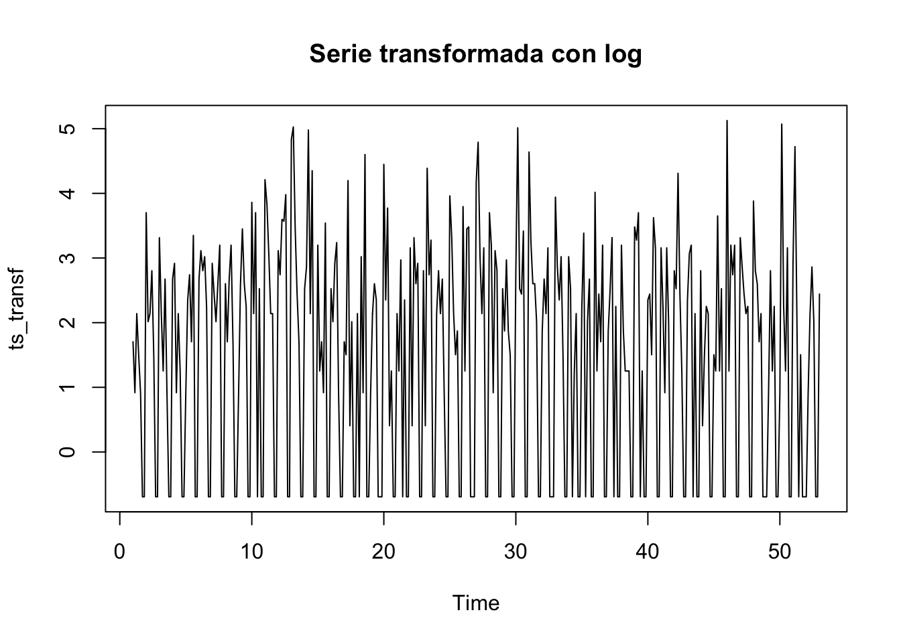

Capítulo 3 Predicciones
3.1 Método Holt-Winters
El método Holt-Winters es una técnica de pronóstico de series temporales que incorpora elementos de tendencia y estacionalidad, extendiendo el método de suavizado exponencial simple. Implica tres parámetros de suavizado que se ajustan al nivel, la tendencia y la componente estacional de la serie temporal. El método de Holt Winters es utilizado para realizar pronósticos del comportamiento de una serie temporal a partir de los datos obtenidos anteriormente. El método se basa en un algoritmo iterativo que a cada tiempo (mes o semana) realiza un pronóstico sobre el comportamiento de la serie en base a promedios debidamente ponderados de los datos anteriores.
Cómo resultado del capítulo 2, se construyó una serie temporal diaria con frecuencia semanal (7 días), que comienza en la semana 1 del ciclo 1 y termina en la semana 53 del ciclo 1. Los valores tienen una distribución asimétrica con muchos ceros (25% de los datos son 0) pero con algunos valores muy altos (hasta 168).
## [1] "ts"## [1] 1 1## [1] 53 1## [1] 7## Min. 1st Qu. Median Mean 3rd Qu. Max.
## 0.00 0.00 7.00 14.04 16.00 168.00El siguiente gráfico muestra que los datos presentan un comportamiento errático con valores altos de ausentimos en algunas semanas. Sin embargo, la línea generada no muestra una tendencia hacía el aumento o disminución.
Para analizar el comportamiento de los datos se intenta realizar una transformación logarítmica. Sin embargo, debido a que la variable de ausencia tiene valores de 0, esta transformación no es posible ya que cuando se trabaja con series temporales donde la variable objetivo contiene ceros, las transformaciones tradicionales como el logaritmo fallan porque log(0) = -∞
En ese sentido, se debe recurrir a otro tipo de transformación que no genere modificaciones profundas en los datos, para ello, se hace uso de una técnica

Una desventaja de esta transformación es que puede crear un “hueco” artificial entre los ceros transformados y los valores pequeños positivos como se muestra en el gráfico. Adicionalmente, los coeficientes en modelos ajustados a datos transformados requieren interpretación cuidadosa. Sin embargo estos “huecos” son una representación fiel de la discontinuidad matemática entre cero y valores positivos, además de un indicador visual de la presencia de ceros en los datos originales que puede ser una propiedad deseable en muchos casos, ya que marca claramente la diferencia entre “cero” y “casi cero”.
A continuación se aplica el método Holt-Winters y a partir de un gráfico intentamos observar como el modelo se ajusta a los datos originales. Posteriormente, se aplica el método a los datos tranformados.
#Se crea una nueva serie de datos muy cerca de los datos originales
# Configurar área de gráfico con 2 filas y 1 columna
par(mfrow = c(2, 1), mar = c(4, 4, 2, 1)) # márgenes ajustados
# Primera gráfica (serie original)
hw <- HoltWinters(ts_diaria)
plot(hw, main = "Suavizamiento Holt-Winters - Serie Original")
# Segunda gráfica (serie transformada)
hwt <- HoltWinters(ts_transf)
plot(hwt, main = "Suavizamiento Holt-Winters - Serie Transformada")Cómo se observa en el gráfico, el método Holt-Winter aplicado a los datos originales (ts_diaria) no se ajusta completamente a los picos de ausentismo que se presentan en algunos días. Una vez se aplica el suavizamiento (ts_transform), con el método antes descrito, vemos que el modelo tiende a ajustarse mejor al comportamiento original, aunque no del todo.
# Configurar área de gráficos (2 filas, 1 columna)
par(mfrow = c(2, 1), mar = c(4, 4, 2, 1)) # Ajustar márgenes
# Gráfico del modelo original
plot(fitted(hw), main = "Modelo Holt-Winters - Serie Original",
ylab = "Valores", xlab = "Tiempo")# Gráfico del modelo transformado
plot(fitted(hwt), main = "Modelo Holt-Winters - Serie Transformada",
ylab = "Valores Transformados", xlab = "Tiempo")Observed (Observada): La serie con el modelo Holt Winters presenta variaciones, con múltiples picos que podrían corresponder a eventos puntuales de alto ausentismo. La serie muestra fluctuaciones regulares, lo que sugiere la presencia de estacionalidad y posiblemente una leve tendencia.
Trend (Tendencia): La tendencia es irregular, pero revela periodos de aumento y disminución del ausentismo a lo largo del tiempo. Se observan tramos donde el nivel general de ausentismo se incrementa al inicio de la semana y antes del fin de semana
Seasonal (Estacionalidad): La componente estacional es clara y bien definida, con un patrón cíclico semanal o cercano al semanal (como fue el caso de la descomposición diaria por día de la semana). Esto sugiere que existe un patrón repetitivo y consistente en el ausentismo, posiblemente relacionado con el inicio o fin de semana, en los que los niveles de ausentismo tienden a aumentar.
Random (Ruido aleatorio): El componente aleatorio muestra picos aislados, lo que indica eventos impredecibles que no pueden explicarse ni por la tendencia ni por la estacionalidad. Es de notar que comparado con los datos originales este metodo de suavizamiento disminuye el ruido presente en la serie
3.2 Predicción próximos 7 días
A continuación se genera una predicción para los siguientes siete días usando los resultados del modelo.
#Se realiza una predicion para los proximos 7 días
pred=predict(hw, 7, prediction.interval = TRUE)
pred## Time Series:
## Start = c(53, 2)
## End = c(54, 1)
## Frequency = 7
## fit upr lwr
## 53.14286 27.4334029 74.75449 -19.88768
## 53.28571 16.6943222 64.10558 -30.71693
## 53.42857 8.5784673 56.08471 -38.92778
## 53.57143 10.6400895 58.24624 -36.96606
## 53.71429 -0.8931247 46.81796 -48.60421
## 53.85714 -0.9199175 46.90122 -48.74106
## 54.00000 26.4335818 74.37000 -21.50283Para finalizar se hace una visualización de los resultados obtenidos.
En este último gráfico se observa en negro la serie real y en rojo la previsto, la barra punteada es la ventana pronosticada para los próximos 7 días. Al trazar cada pronóstico, se puede ver que el método de Holt muestra claramente la captura de un componente de tendencia.
3.3 Conclusión aplicacion metodología Holt-Winters
La metodología Holt-Winters es una técnica de pronóstico que captura de manera efectiva las tendencias y la estacionalidad en los datos de series temporales. En la base de datos de Ausentismo se concluye que la nueva serie de datos aplicando el método de suavizamiento exponencial permitió disminuir los picos que se observaban en el modelo original permitiendo disminuir el ruido y mostrando un modelo predictivo que apunta al ausentismo laboral en el comienzo y final de la semana. En este ejemplo especifico al aplicar la metodología se esboza un componente de tendencia y se determina un patrón de estacionalidad para el ausentismo presente en la serie de tiempo entre julio de 2007 a julio de 2010.
.
.